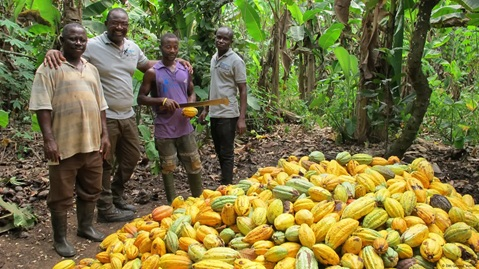

REGIONAL GUIDE
Where Cocoa Is Grown
Ghana's cocoa farms are found mainly within the forest zones where climate and soil conditions support cocoa cultivation.

Why Location Matters
Cocoa requires suitable rainfall, temperature, soil, and shade conditions. The natural environment of Ghana's forest areas makes several parts of the country suitable for cocoa farming.